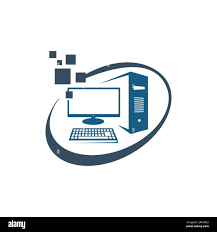

laptop
Microcomputers
Supercomputers.
Computer : is an electronic device that operates (works) under the control of programs stored in its own memory unit A computer is an electronic machine that processes raw A computer is an data to give information as output.A computer will accept data in one form and produce it in another form.Computer : is an electronic device that operates (works) under the control of programs stored in its own memory unit A computer is an electronic machine that processes raw A computer is an data to give information as output.A computer will accept data in one form and produce it in another form